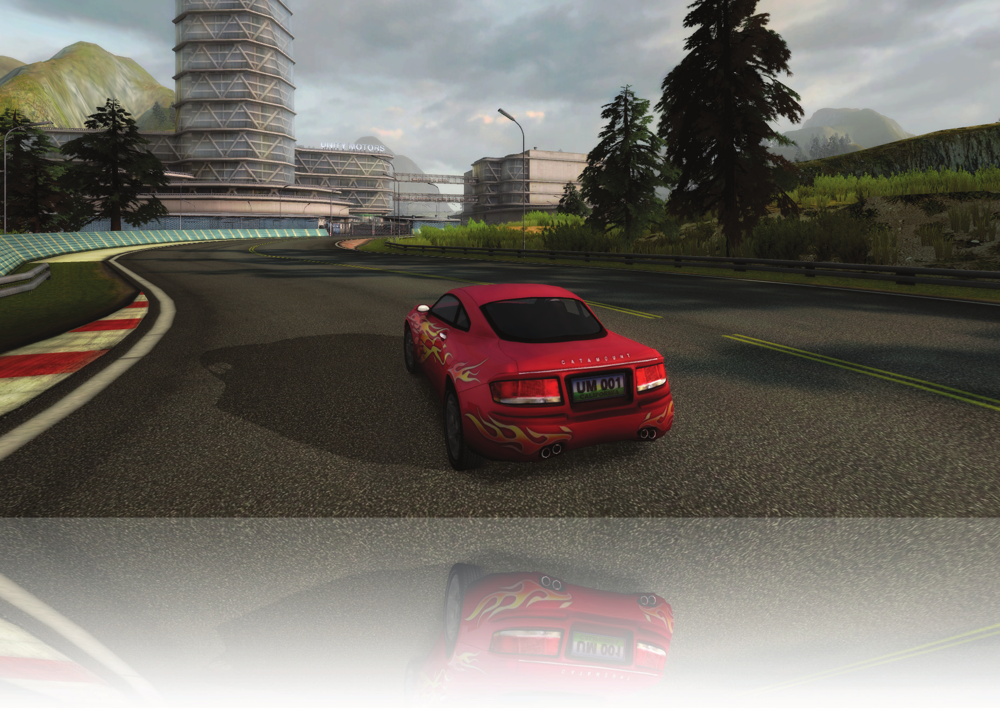
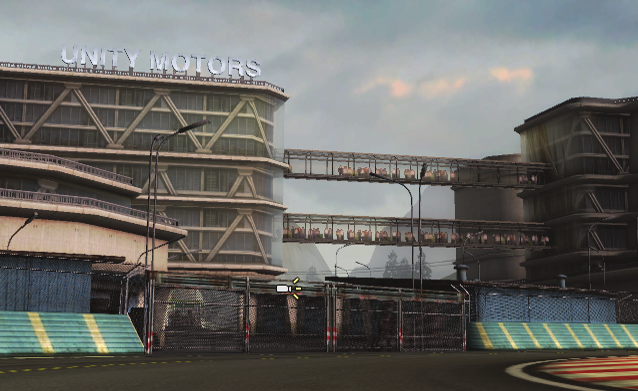
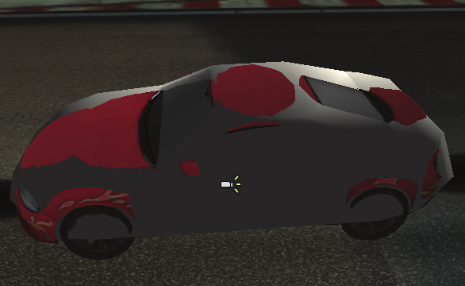
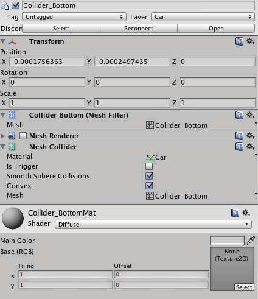
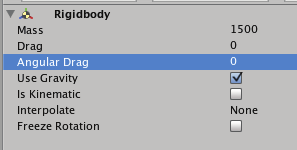
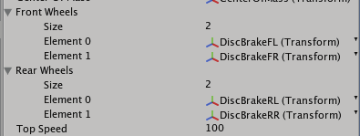
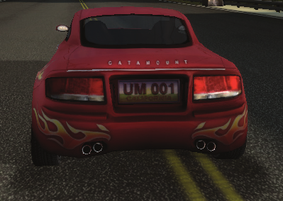
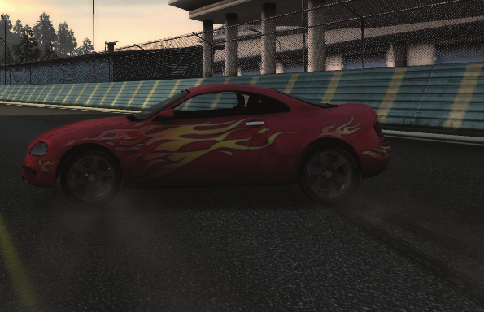
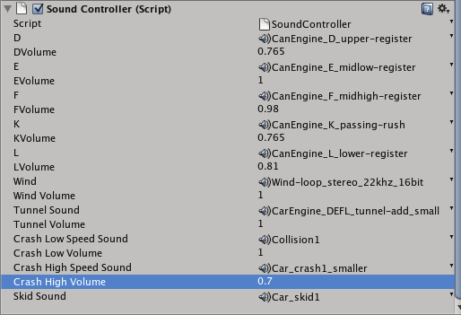
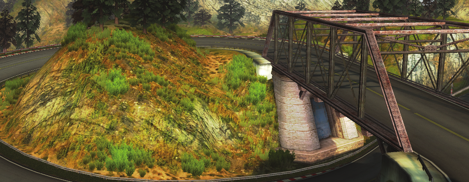

“The Car Tutorial” Part 1
Creating a Racing Game for Unity

“The Car Tutorial”― Creating a Racing Game for Unity, Part 1
Introduction
The aim of this tutorial is to show you how to create a racing game with Unity. We are going to
assemble a car from a 3d model, scripts and Components. We provide you with a complete project
of a driving game, where you can play with a fi nished scene and explore how everything is put to-
gether. We also provide you with a scene that has everything ready but the car, which you will then
work on completing.
We will show
Let us begin by talking about what this tutorial will deal with. It is divided into three distinct sec-
tions that can worked on independently of each other:
1. Assembling the Car
How to assemble a Car Prefab from a 3D model, scripts and components. This is the section you are
reading right now.
2. Tweaking the Car
How to tweak the car to behave “better” or in different ways.
3. Under the Hood
A more in-depth look at the actual code that drives the car.
Prerequisites
The tutorial is not intended as an entry point to learning Unity. You should have a basic under-
standing of how Unity is organized, what a GameObject is, what Components are and so on. Some
proficiency in scripting is also recommended. This being said, we will explain a lot of stuff along
the way, basic and advanced.
We will not show
• All the other scripts.
• The very basics. We will not go in depth with explaining the basic workfl ow and components in
Unity. For that there are many other resources available at:
http://unity3d.com/support/documentation/video/
http://unity3d.com/support/resources/
The User Manual and the Scripting Reference are valuable companions as you follow along this
tutorial. We suggest that you visit these resources when ever you encounter a built in Component
or function that you’d like to know more about.
The approach taken at fi rst is that of code monkey see, code monkey do: You follow the instruc-
tions we give about putting a car together and changing it’s variables. Hopefully you will be curi-
ous about how it works, learn something from seeing how everything is put together and do some
investigation on your own. Feel free to explore.
In the last and longest section we dive more deeply into the actual code that makes the car drive.
This is not a line-by-line walkthrough, but we will cover most of what is going on. One way to learn
programming or improve ones skills is to look at a lot of code (supplemented by doing a lot of
programming). We are certain that you will learn a lot from following this closely and getting an
understanding of how the code works together.
Part 1: Assembling the Car
Download the zipped project folder from http://unity3d.com/support/resources/files/CarTutorial.zip
Start by opening the scene named ‘CompleteScene’. This scene has the car already setup, so you
can try it out by pressing the Play button. This will show you the end result of what we are going
to build.
When you are done playing around, open the scene named
‘TheTrack’. This scene contains what is needed to race, except the
most important part - a car.
Now drag the car model into the Scene. In the Project view you fi nd it under Models/Car/catamount.
Depending on where you dragged the car, you probably want to change it’s position to a more
suitable one. I suggest that you change its position in the inspector to something like (860, 102.3,
878) and set it’s y-rotation to 130.
For the rest of the tutorial, this GameObject will be referred to as ‘Car’ so you might as well
rename it now.
This is just the 3D model of the car. If you look in the Inspector, you will see that it contains a number
of children such as the car’s body, windows and wheels. It also contains two simple meshes that
we will use for the car’s colliders. Don’t worry about them be-
ing visible for now, we will change that. Take some time looking
at how the car is arranged by different parts, and how they are
related to each other in the hierarchy.

For various reasons, we want the car to be in it’s own layer. With
the Car GameObject selected, go to the Inspector and select ‘car’
in the layers drop down menu. In the popup menu click ‘Yes, change children’ to make the change
apply to all GameObjects in the car’s hierarchy.
The Car GameObject has an Animation component attached by default. Since this is not something
we are going to use, go ahead and do a little clean up by clicking the small wheel to the right of
the Animation Component and selecting ‘Remove Component’.
Adding Collision
Now we’ll set up the collision components for the car to
prevent it from falling through the ground when running
the scene. Instead of using complex mesh colliders based
on the actual mesh of the car, we have setup two meshes
that are much simpler, that fi t the top and bottom of the
car. For performance reasons, we are using these meshes
as the collision model.

•
Click on the Collider_Bottom game object which is
located as a child of the Car.
• Go to the Component/Physics Menu and click the MeshCollider to add one to the game object.
• Click the Material dropdown-selector on the newly added MeshCollider component and select
the Car physics material.
• Check the two boxes ‘Smooth Sphere Collisions’ and ‘Convex’
• Since the colliders are going to be invisible, go ahead and remove the MeshRenderer and Mesh
Filter Components from the GameObject (Click the small cog wheel to the right of the Compo-
nents and select ‘Remove Component’.
• Do the same as above for the Collider_Top game object.
Shadow settings for the car model
We are going to change the shadow settings for the car model for two reasons. First of all turning
off shadow casting or receiving for objects that don’t really need it is very good practice for per-
formance reasons. Second of all we feel that it looks better to not have the car receive shadows. It
might be more pleasing to the eye that shadows are not constantly appearing and disappearing on
the car when it is traveling at high velocity under the level geometry. It’s up to you what you prefer
though. If you want more realistic shadow behavior, it is entirely possible. Just change the settings
according to your liking.
The settings we use for the various parts of the car are the following:
Body: Cast Shadows enabled. Receive Shadows disabled.
Body Interior: Cast Shadows enabled. Receive Shadows disabled.
Car Windows: Cast and Receive Shadows disabled
DiscBrakes: Cast and Receive Shadows disabled
Wheels: Cast Shadows enabled. Receive shadows disabled.

Adding the Car’s Components
Now let’s start adding the components needed to make the car actually work onto the Car
GameObject.
First of all, we need a way to control the car’s position in the
world by physical simulation, and the built-in RigidBody com-
ponent is perfect for that. With the Car Game Object selected,
go to the Components menu and select Physics/RigidBody. Ac-
cept the message Unity gives you about losing prefab connec-
tion, and observe how the GameObject now has a Rigidbody attached as one of it’s components.
• The car obviously weighs more than just one kilo, so start by changing the Rigidbody’s mass to
something more realistic like 1500.
• Next we have the drag and angularDrag properties, which are forces that slow down the Rigid-
body’s speed and rotation. We will control the drag of the car through scripting, so just set the
drag and angularDrag properties to 0.
• Locate the Car.js script in the folder ‘scripts/JavaScripts’ and drag it onto the Car GameObject.
This script is the “engine” of the car, and is the script we will focus on explaining the most at
the end of this tutorial.
The Car-script component has a lot of different variables that will be explained when we start
tweaking the car, and even more when we walk through the code. For now we just want to setup
what is needed to be able to take the car for a quick test run.

First of all, the car script needs to know about the
wheels that the car has. In the Inspector you will
see the Front Wheels and the Rear Wheels, and
notice that both of them can be expanded by click-
ing on the small arrow to the left of the names.
• Set the size of the Front and Rear Wheels to 2, making room for two front wheels and two
rear wheels.
• Now expand the WheelFL, WheelFR, WheelRL and WheelRR in the inspector. You will see
that they each have a DiscBrake as a child, and that each disc brake has a wheel as a child. For
now you should be content with knowing that the disc brake and wheel game objects are the
graphical representation of the wheel.
• Drag the DiscBrakeFL and DiscBrakeFR to the two open slots in the Front Wheels under the
Car script and the DiscBrakeRL and DiscBrakeRR to the slots under the Rear Wheels.
• You might ask - why are the DiscBrakes the wheels? And the explanation is simple: The disc
brakes are parent Game Objects to the tire graphics, so setting the discs as wheels will in-
clude the tires.

Adding a blob shadow
The directional light will make the car cast a
nice shadow on the road if shadows are enabled
in your project. But we also want to add the
shadow that is under the car, as seen in the im-
age here.
For that we will use a projector that projects a
blob shadow resembling the shape of the car
onto the road directly under the car.
A projector is a built-in component that works just like a real life projector. You specify the texture
that you want it to transmit, and based on the settings for the projector and the distance to the
target(s), it will draw this texture onto the objects that are in it’s way.
• In the Hierarchy, create an empty GameObject and drag it to the Car to make it a child of it.
• Name it ‘Blob shadow projector’
• Add a Projector component to the Blob shadow projector (Component->Renderer->Projector)
• Set the projectors Near Clip Plane to 0.1, its Far Clip Plane to 50, its Field of View to 30.
• Assign the Blob_shadow material to its Material slot.
• In the ‘Ignore Layers’ select ‘Everything’ and then deselect the ‘Road’ layer, thus making the
projector only cast the blob shadow on the road.
• Add the BlobShadowController.js script (in the Scripts/CSharpScripts folder in the Project view)
The position and rotation of the Projector Component gets updated each frame in the Blob Shadow
Controller script, which is pretty simple. In short, it is placed 10 meters above the car and gets it
rotation set based on the rotation of the car. You can take a look at the script and try changing the
values if you want the car’s blob shadow on the road to look differently.

Skidmarks
Some of the things that make it fun to drive the
car are pushing the car to slide around a corner
or doing a u-turn at high speed. To enhance
the effect of the wheels sliding on the road and
make it a bit more believable, we are going to
add some skidmarks to the surface we’re driving
on when the car is sliding.
The way we set the skidmarks is by having a script that controls all the skidmarks in the scene. This
controller is responsible for creating the mesh that represents the skidmarks. Each wheel knows
its own position, and whether or not it is sliding. We use this information to register a point in the
world where we want the skidmark to be in relation to the skidmark controller. We let each wheel
keep track of the previous skidmark-point so that the skidmarks from several wheels don’t get
mixed up.
We have created a prefab for this that you can just drag into the scene:
• Drag the Skidmarks prefab from Prefabs->VFX->Skidmarks into the scene.
We set the intensity of the skidmarks by adjusting the color of each vertex created. The intensity is
determined by how much the wheel is skidding. For this to take effect we use a customized shader
that uses the alpha from each vertex when rendering the skidmarks.
As with the car there are several things that can be changed to make the skidmarks match better to
the car that you are trying to build. Looking at the Skidmarks Component on the Skidmarks game
object you should see that there are a few public variables that can be tweaked.
Max Marks
The Max Marks variable determines the number of positions for the skidmarks that can exist in the
scene at any time. All the wheels are using the same Skidmarks, so this number counts for all wheels.
Whenever the maximum number is reached, the ones created fi rst will be overwritten.
Increasing this number will also increase the combined length of all the pieces of skidmarks in the scene.
Mark Width
The Mark Width sets the width of the skidmarks. This has to be adjusted to fi t the wheels of the ve-
hicle created. If it is a monster truck you are trying to make a very wide skidmark might be needed,
and if it is a supersonic car with ultra-thin tires made for setting the ground speed record, a very
thin skidmark could work better.
Ground Offset
When the mesh for the skidmarks is created, it will be created using the points calculated from the
wheels for positioning the skidmark patches. These points will most often be right on the surface
of whatever the wheel was driving on at the time it was sliding. When two meshes are rendered
right on-top of each other, it might give some fl ickering results in the game.
To prevent this the Ground Offset variable is introduced. The mesh created will be raised by the
length of the offset in the direction of the normal of the surface that it is created over. So if some
fl ickering occurs, or the skidmarks intersect with the surface, try increasing the offset.
To further ensure that the skidmarks are rendered on top of the ground, the shader used for the
skidmarks has been given an offset, and has been assigned to another render queue than the
standard one.
Min Distance
When a new point is added to the SkidmarkController it has to be Min Distance away from the
last skidmark point added by the same wheel. That ensures that you don’t waste points on adding
skidmarks on a very small area. Don’t set this value too high though, since that might make the
patches of the skidmarks too long, and furthermore an increased distance might appear as lag, i.e.
the skidmarks appear behind the wheels. Decreasing the value will, to some extent, smooth the
skidmarks, and make the skidmarks be created closer to the wheels.
Texture
The tire pattern for the tires on a monster truck are quite different compared to the tire patterns
on wheels from a formula one racer. The texture used for the skidmarks resembles the marks the
given tire pattern of the wheels will make on the surface. If you created another type of car, with
very different wheels, you would need to change this texture if you want the skidmarks to match
the wheel.

Adding Sound
• Add the SoundController.js script to the Car game Object. (Drag it from Scripts/JavaScripts/Sound-
Controller.js).
The Sound Controller component has several slots for audio, that we need to assign the different
audio fi les to. The audio fi les are in the Sound/Car folder in the Project view. Drag the:
•
CarEngine_D_upper-register to the D slot.
Set the Volume to 0.565
•
CarEngine_E_midlow-register to the E
slot. Set the Volume to 0.8
•
CarEngine_F_midhigh-register to the F
slot. Set the Volume to 0.78
•
CarEngine_K_passing-rush to the K slot.
Set the Volume to 0.565
• CarEngine_L_lower-register to the L slot. Set the Volume to 0.71
• Wind-loop_stereo_22khz_16bit to the Wind slot. Set the to Volume 0.8
• CarEngine_DEFL_tunnel-add_small to the Tunnel Sound slot. Set the Volume to 0.8
• Collision1 to the Crash Low Speed Sound slot. Set the Volume to 0.8
• Car_crash1_smaller to the Crash High Speed Sound slot. Set the Volume to 0.5
• Car_skid1 to the Skid Sound slot
• CarTutorialSong to the Background Music slot. Set the Volume to 1.

The volume settings are of course just suggested values. You can play around with different values
to get the exact sound image that you prefer. Or you could take it even further and build your own
settings menu for sound, allowing to tweak volume for music and effects separately in-game.
Finalizing the Assembling
Finally drag the following scripts onto the Car game object:
• LightmapperObjectUV.js (from scripts/JavaScripts)
• CrashController.js from (scripts/JavaScripts)
• Generate2DRefl ection.cs (from Scripts/CSharpScripts)
We need to do one fi nal thing before we can try out the stuff we just created. The camera needs
to know what to look at and follow, otherwise we’ll just drive the car out of the view as soon as we
start moving.
• Go to the Main_Camera Game Object and set its Target (under the Car Camera script compo-
nent) to the Car Game Object.